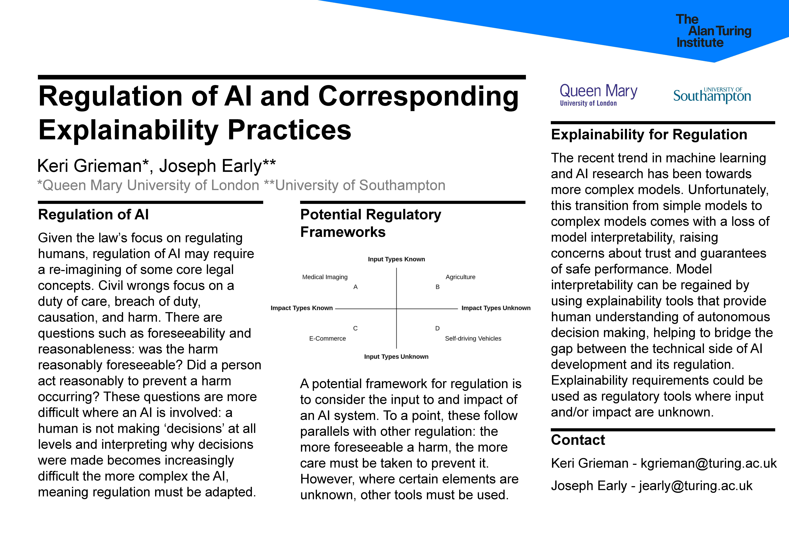
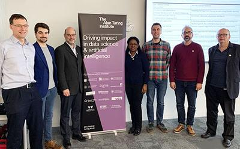
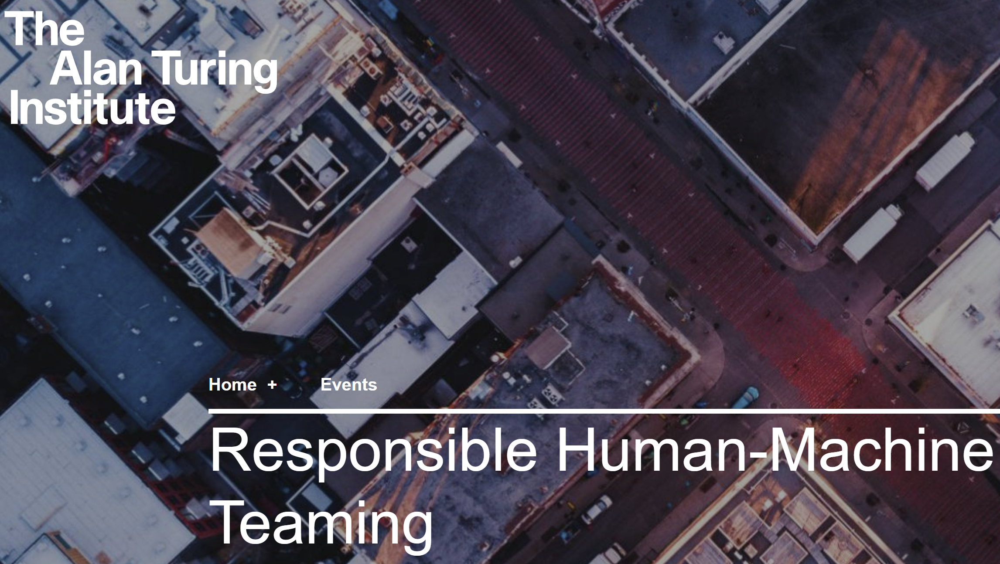
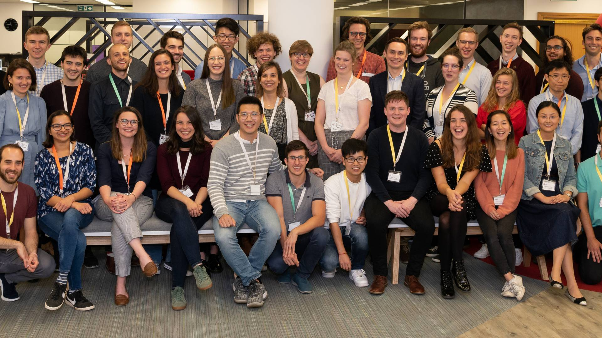
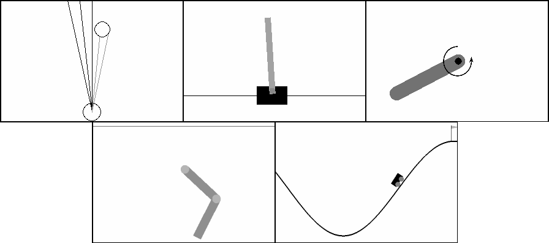

Articles
The Conversation, Joseph Early
October 2022

AI could help predict suicides – but rushing the technology could lead to big mistakes
AI has great potential to save the lives of mental health patients, but care must be taken to ensure it's used safely and correctly. A study conducted in October 2022, led by the Black Dog Institute in the University of New South Wales, found artificial intelligence (AI) models outperformed clinical risk assessments. However, despite their promise, AI models for mental health are yet to be widely used in clinical settings.
The Conversation, Joseph Early
September 2022

AI can produce prize-winning art, but it still can't compete with human creativity
People consider creativity to be inherently human. However, artificial intelligence (AI) has reached the stage where it can be creative as well. Unions of creative practitioners such as Stop AI Stealing the Show have for some time been raising concerns about the use of AI in creative fields. But could AI actually replace human artists?
Medium - Towards Data Science, Joseph Early
June 2022

Explaining AI for High-Resolution Images
AI can be used to make automated decisions based on high-resolution images, but can we understand those decisions? In this article, I discuss how interpretable multiple instance learning can be used to tackle this problem.
Medium - Towards Data Science, Joseph Early
June 2022

Mastering Inset Axes in Matplotlib
Inset axes are a fantastic (and often underutilised) tool in Matplotlib. In this article, I go through the basics of using inset axes, and then give extra details on how to customize and improve your plots.
YouTube - Joseph Early
May 2022

Three Minute Thesis - 2022 Southampton Engineering Heat Entry
The Three Minute Thesis (3MT) competition celebrates the exciting research conducted by PhD students. Developed by The University of Queensland, 3MT cultivates students’ academic, presentation, and research communication skills. This my winning entry to the 2022 Southampton Engineering Heat, titled "Opening the Black Box: Explaining AI for high resolution images".
Medium - Towards Data Science, Joseph Early
March 2022

Understanding the Outputs of Multi-Layer Bi-Directional LSTMs
In this short tutorial, I break down the outputs of Multi-Layer Bi-Directional LSTMs, with an example of how to do so in PyTorch.
Medium - Predict, Joseph Early
February 2022
Can AI solve the world’s hardest Go problem?
Igo Hatsuyoron 120 is the hardest Go problem in the world. Let's explore the most recent developments in applying AI to this problem.
University of Southampton, Electronics and Computer Science
December 2020
How will Santa save the pandemic Christmas?
Just as for all of us, the challenges of the COVID-19 pandemic have really taken their toll at the North Pole this year. One major hurdle remains: how will Santa deliver his presents this winter?
Medium - Towards Data Science, Joseph Early
July 2020

The Potential of Gated Linear Networks for Online Learning
A recent publication from DeepMind brings an interesting new take on sample-efficient online learning.
Medium - Towards Data Science, Joseph Early
June 2020
How to create Latex tables directly from Python code
Copying tables of results from the console into a Latex report can be tedious and error fraught — so why not automate it?
University of Southampton, Joseph Early
June 2020
ECS Outreach - Deep Learning Taster Talk
An outreach video for the University of Southampton Electronics and Computer Science department giving an overview of the Deep Learning coursework.
The Alan Turing Institute
June 2020
AI UK | 2020 Digital poster exhibition
As a truly national institute, we provide a platform for excellent research that is underway across the whole of the UK. As such, we are delighted to announce to host a unique opportunity for researcher development and training, with UK students displaying and presenting their current research in artificial intelligence.
Medium - The Startup, Joseph Early
February 2020

What's hot in Multi-Agent Systems?
Multi-Agent Systems research has been a long standing topic in AI, but what are AI researchers in the UK currently working on?
University of Southampton
January 2020
Turing at Southampton Welcomes New Fellows
Representatives from The Alan Turing Institute at Southampton welcomed a new cohort of fellows and a doctoral student to the Turing at Southampton group.
Medium - Towards Data Science, Joseph Early
December 2019

The Biggest AI Risk of the Next Decade is not a Robot Uprising
Grand generalisations about the future impacts of artificial general intelligence overshadow the more pressing issues we face today.
Medium - Towards Data Science, Joseph Early
December 2019

Reproducible Data Science using Kaggle and GitHub Actions
With the emerging reproducibility crisis in data science, it is becoming more important for data science researchers to provide open access to their code. This tutorial demonstrates how to integrate Kaggle with GitHub actions to enable better reproducibility of data science projects.
Southampton Electronics and Computer Science, Liz Gilbride
November 2019
ECS researchers nationally recognised by The Alan Turing Institute
Three members of Electronics and Computer Science (ECS) have been recognised for their research potential by being awarded roles in The Alan Turing Institute – the UK’s national institute for data science and artificial intelligence. PhD student Joseph Early is the first Southampton student to be selected as a Turing Doctoral Student, while Dr Adriane Chapman and Professor Neil White, Directors of the Centre for Health Technologies, have been named as Turing Fellows with pilot projects.
The Alan Turing Institute, Joseph Early
October 2019
Responsible Human-Machine Teaming Workshop
The official summary of The Responsible Human-Machine Teaming Workshop at the Alan Turing Institute - a one day event that explored the areas of responsible artificial intelligence, explainable artificial intelligence, human-centred design, robotics, and human robot interaction.
The Alan Turing Institute, Joanna Dungate
September 2019
From agriculture to engineering The Alan Turing Institute welcomes new cohort of students
With students from diverse disciplines ranging from agriculture to engineering, and from law to health, the Turing is delighted to welcome an energetic new cohort of enrichment and doctoral students. There are 54 new students joining the Institute for the academic year 2019/2020. This includes 19 Doctoral students, and 35 Enrichment students.
Medium - Towards Data Science, Joseph Early
September 2019

Your Car May Not Know When to Stop - Adversarial Attacks Against Autonomous Vehicles
Autonomous vehicles present a utopian dream of high-speed, clean and efficient transportation. However, the computer vision systems at the core of self driving vehilces have been shown to be susceptible to adversarial attacks.
Medium - Becoming Human, Joseph Early
July 2019

Real Time Image Style Interpolation
In the Deep Learning module in my final year at the University of Southampton, the main coursework was based on the ICLR Reproducibility Challenge — a mission to replicate the experiments and results of recently published ICLR papers. My team chose to re-implement A Learned Representation For Artistic Style (Dumoulin et al., 2016).
Medium, Joseph Early
June 2019
Evolving Agents That Don't Forget
This article summaries some of the research I did as part of my undergraduate degree at the University of Southampton. I developed a novel technique for reducing 'catastrophic forgetting' - the pitfall that machine learning systems encounter when trying to learn several task sequentially.